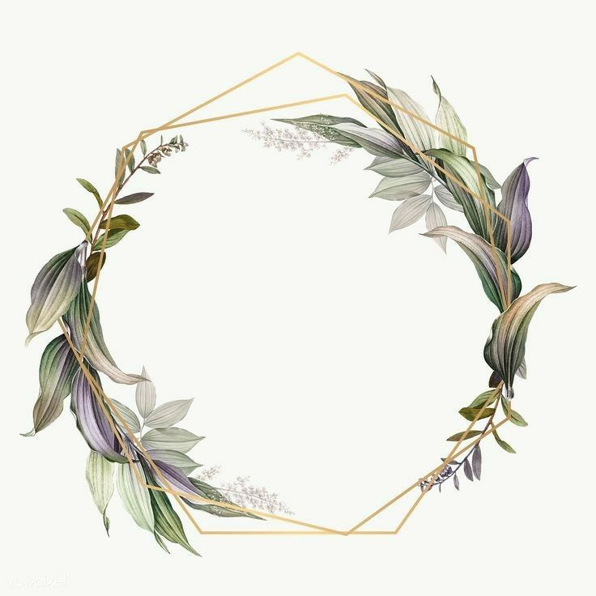

Q.S Ar-Rum: 21
وَمِنْ ءَايَٰتِهِۦٓ أَنْ خَلَقَ لَكُم مِّنْ أَنفُسِكُمْ أَزْوَٰجًا لِّتَسْكُنُوٓا۟ إِلَيْهَا وَجَعَلَ بَيْنَكُم مَّوَدَّةً وَرَحْمَةً
"Dan di antara tanda-tanda (kebesaran)-Nya ialah Dia menciptakan pasangan-pasangan untukmu dari jenismu sendiri..."
Mempelai
Octarudin Mahendra
PUTRA KE-2 DARI
Bpk. Jamarudin & Ibu Hendri Winartun
&
Novi Sebtian Amelia
PUTRI DARI
Bpk. Syamsi & Ibu Suparmi
Rangkaian Acara
Akad Nikah
Sabtu, 30 Mei 2026
08.00 - 10.00 WIB
Bertempat di:
Tembak Kemangi Resort
Ponorogo, Jawa Timur
Resepsi
Sabtu, 30 Mei 2026
11.00 WIB - Selesai
Bertempat di:
Tembak Kemangi Resort
Ponorogo, Jawa Timur